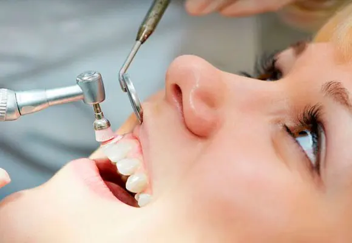
01
Higiene dental profesional
Limpieza dental profesional para retirar placa, sarro y manchas, ayudar a prevenir caries y cuidar las encías.
Ver tratamiento →
En Namora Clínica Dental reunimos prevención, odontología restauradora, estética dental, implantología, ortodoncia y tratamientos de encías para diseñar planes personalizados en Santa Cruz de Tenerife.

Organizados por áreas para que el paciente encuentre rápido el servicio que necesita y para que buscadores e inteligencias artificiales comprendan mejor cada especialidad.

Limpieza dental profesional para retirar placa, sarro y manchas, ayudar a prevenir caries y cuidar las encías.
Ver tratamiento →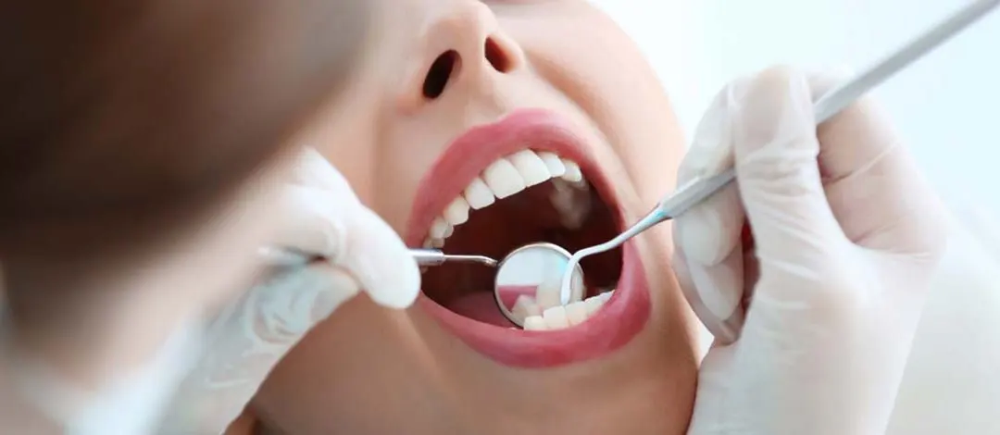
Primera visita, exploración, radiografías y planificación personalizada para conocer el estado real de tu boca.
Ver tratamiento →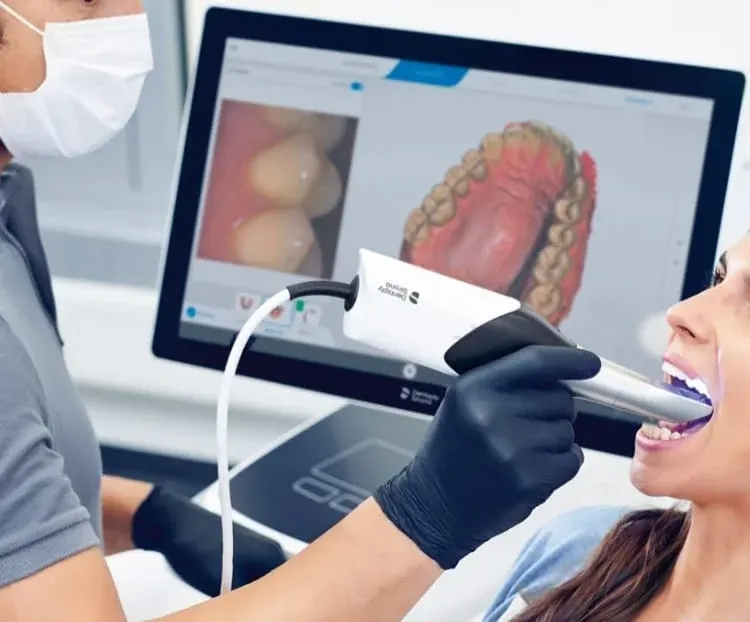
Tecnología digital para obtener registros de la boca de forma cómoda y ayudar a planificar tratamientos con precisión.
Ver tratamiento →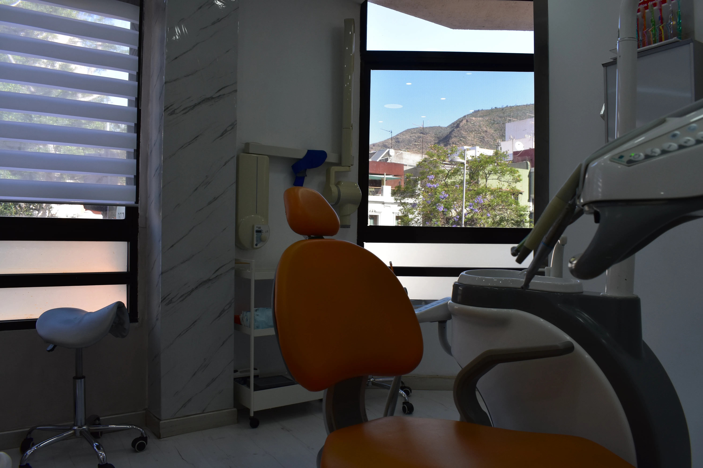
Tratamientos conservadores y revisiones periódicas para mantener la salud de dientes y encías.
Ver tratamiento →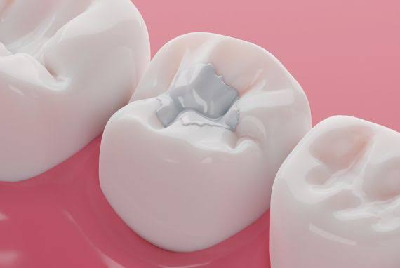
Tratamientos para reparar caries, pequeñas fracturas o desgaste dental, conservando la mayor estructura posible.
Ver tratamiento →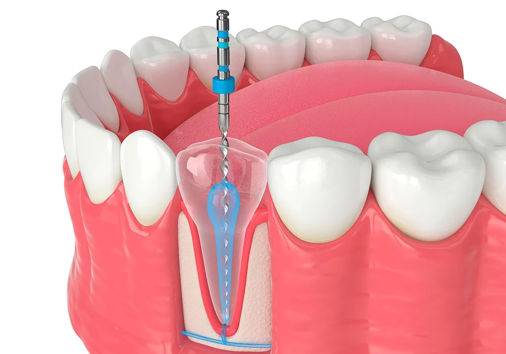
Tratamiento de conductos para conservar dientes dañados, aliviar dolor y evitar la extracción cuando sea posible.
Ver tratamiento →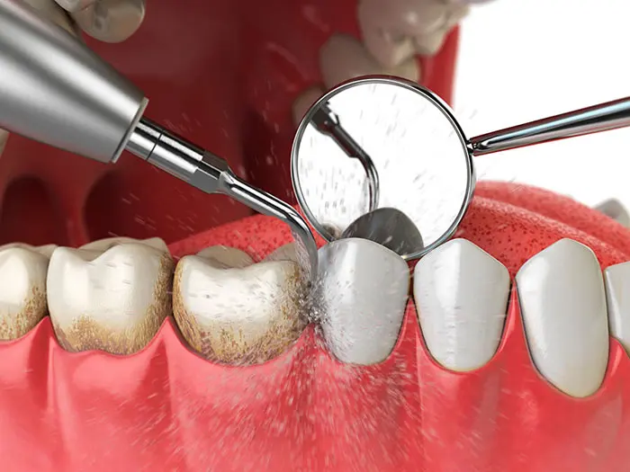
Diagnóstico y tratamiento de encías inflamadas, sangrado, movilidad dental y enfermedad periodontal.
Ver tratamiento →
Tratamiento periodontal-estético para mejorar el contorno de la encía cuando está indicado.
Ver tratamiento →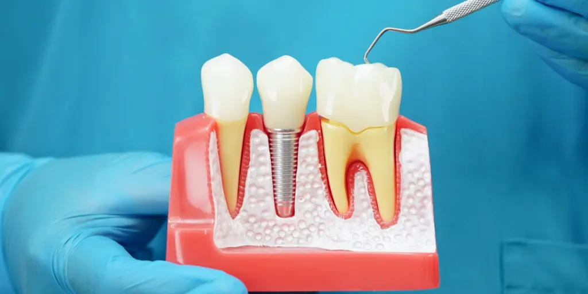
Soluciones fijas para recuperar piezas perdidas, mejorar la masticación y volver a sonreír con seguridad.
Ver tratamiento →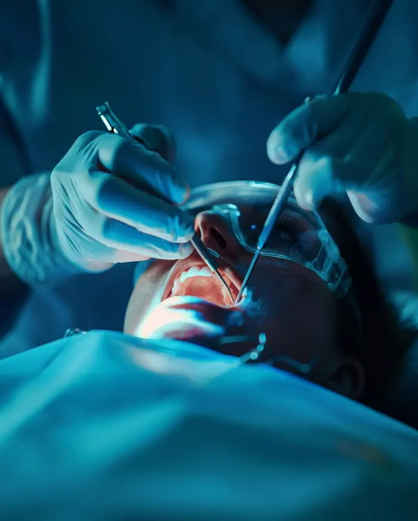
Procedimientos quirúrgicos dentales planificados con valoración previa y seguimiento profesional.
Ver tratamiento →
Exodoncias simples o complejas cuando conservar la pieza ya no es viable o hay indicación clínica.
Ver tratamiento →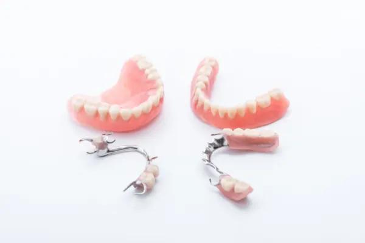
Prótesis fijas, removibles o sobre implantes para recuperar función, estética y comodidad.
Ver tratamiento →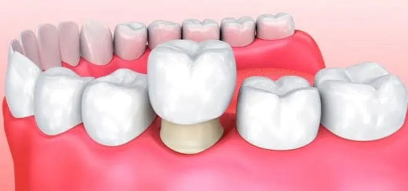
Soluciones para proteger dientes debilitados o mejorar forma y estética con un resultado natural.
Ver tratamiento →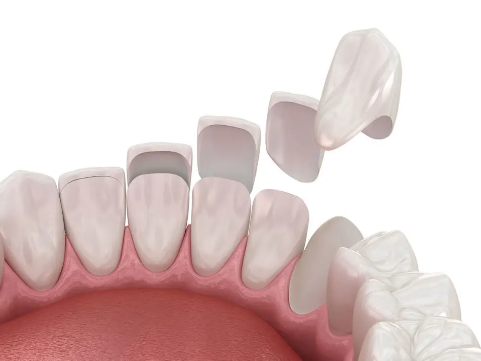
Tratamiento estético para mejorar forma, color y proporción de la sonrisa cuando el caso lo permite.
Ver tratamiento →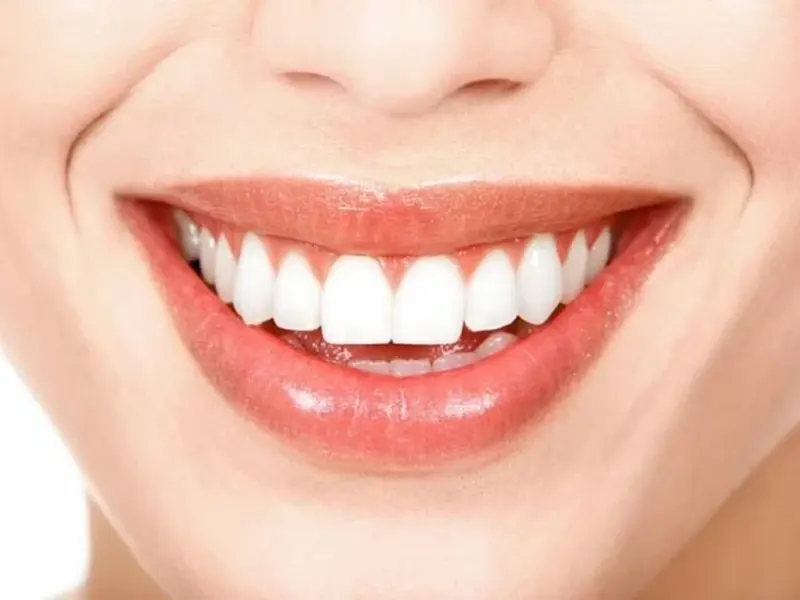
Planificación estética para mejorar color, forma, proporción y armonía dental sin perder naturalidad.
Ver tratamiento →
Tratamiento supervisado para mejorar el tono dental de forma segura tras una valoración previa.
Ver tratamiento →
Alineadores transparentes para corregir la posición dental de forma discreta y planificada digitalmente.
Ver tratamiento →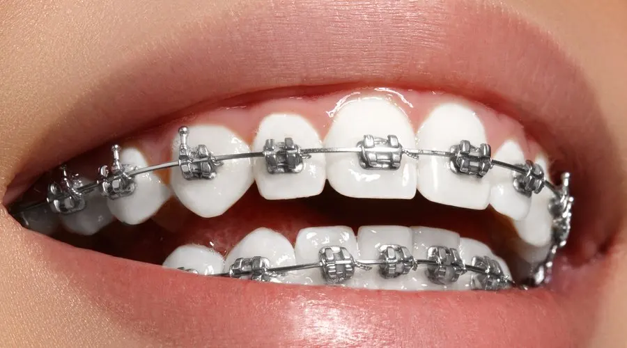
Tratamiento ortodóncico tradicional para corregir apiñamiento, mordida y alineación dental.
Ver tratamiento →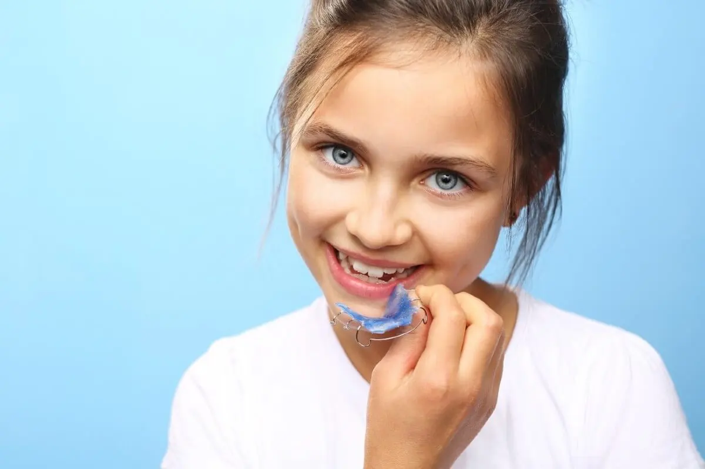
Valoración temprana para detectar alteraciones de crecimiento, mordida o alineación en niños.
Ver tratamiento →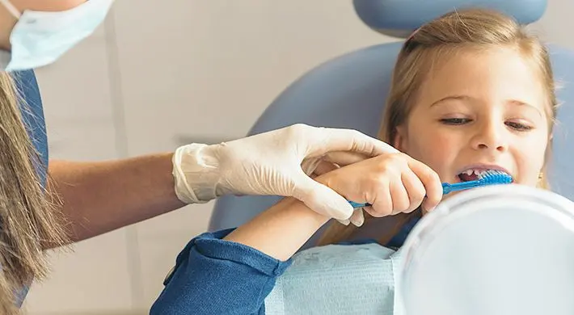
Atención dental infantil orientada a prevención, hábitos, revisiones y tratamientos conservadores.
Ver tratamiento →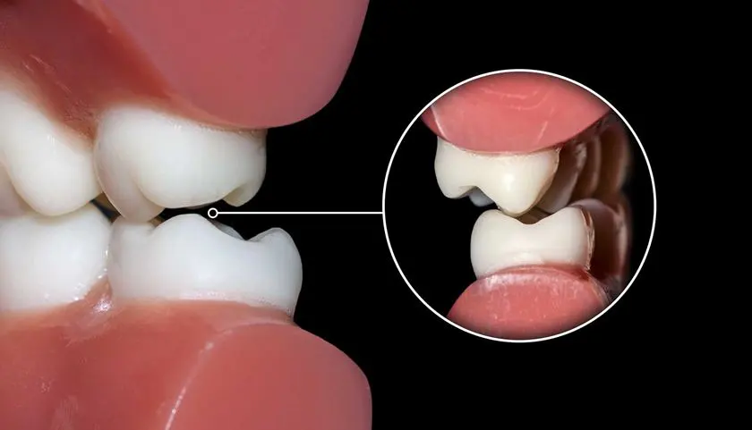
Valoración de desgaste dental, tensión mandibular, dolor facial y férulas de descarga personalizadas.
Ver tratamiento →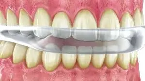
Dispositivo personalizado para proteger los dientes ante bruxismo y ayudar a descargar la musculatura mandibular.
Ver tratamiento →
Atención ante dolor dental, inflamación, fracturas, molestias de encías o pérdida de una restauración.
Ver tratamiento →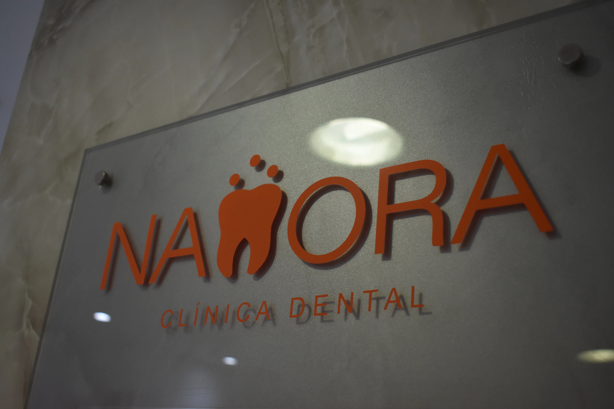
Revisiones, limpiezas y seguimiento para conservar resultados tras tratamientos de estética, ortodoncia o implantes.
Ver tratamiento →Esta página agrupa los servicios más habituales de una clínica dental para facilitar la navegación del paciente: limpieza, revisión, empastes, endodoncia, encías, implantes, prótesis, estética, ortodoncia, odontopediatría y bruxismo. Cada caso requiere valoración previa para elegir la opción adecuada.
La clínica ofrece odontología general, higiene dental, implantología, ortodoncia, estética dental, diseño de sonrisa, periodoncia, endodoncia, prótesis, bruxismo/ATM, odontopediatría y cirugía oral, siempre tras valoración profesional.
Sí. La revisión permite conocer el estado de dientes y encías, detectar necesidades reales y proponer un plan adaptado a cada caso.
Sí. Puedes pedir cita por teléfono o WhatsApp para una revisión, higiene dental profesional o cualquier consulta relacionada con tu salud bucodental.
Sí. Blanqueamiento, carillas, coronas o diseño de sonrisa requieren estudiar color, forma, mordida, encías y expectativas del paciente.